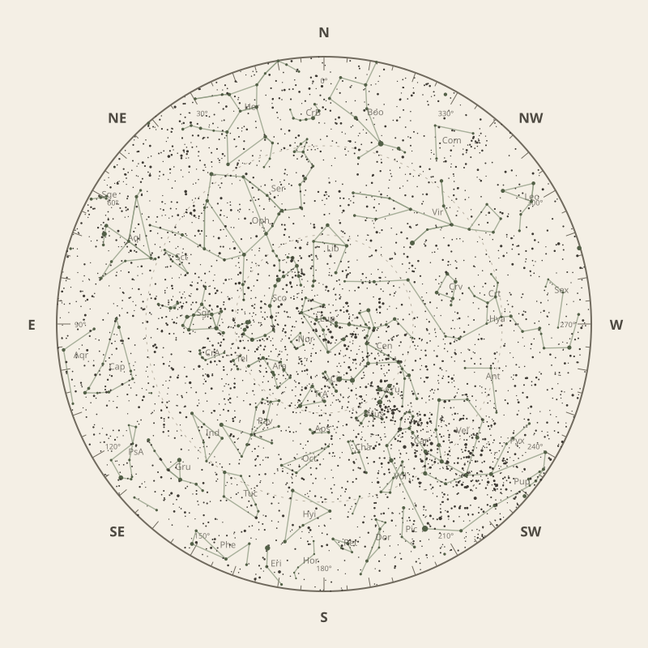

← Annual almanac


North is at the top; east is at the left. Solar System objects shown are above the horizon at 10 pm.
Monthly field almanac
June 2026
Galactic Centre viewing is best on 14 Jun 2026, from 6:38 pm to 6:28 am, reaching 76°.
- New Moon
- 15 Jun Darkest skies
- Full Moon
- 1 Jun Brightest skies
- Best dark window
- 19 Jun 13h 49m
Current conditions
Checking the sky near Southern Tasmania, Australia…
Sky chart: 15 Jun 2026, 10 pm
Southern Tasmania, Australia local time.
Show static monthly chart

Night planner
Choose a date to see astronomical darkness, Moon interference, Galactic Centre visibility, and planet altitudes and times.
Best low-Moon dark periods this month
- 5:19 pm–7:07 am13h 49m · 22% Moon
- 5:18 pm–7:07 am13h 48m · 14% Moon
- 5:18 pm–7:07 am13h 48m · 7% Moon


Galactic Centre sessions
- 6:38 pm–6:28 am11h 50m · core to 76°
- 6:19 pm–6:09 am11h 50m · core to 76°
- 6:28 pm–6:18 am11h 50m · core to 76°
Events
- HIP 81910 lunar occultation2:07 am to 3:04 am; Moon at 63° altitude for the first listed contact.
- HIP 82397 lunar occultation5:49 am to 6:22 am; Moon at 24° altitude for the first listed contact.
- Mercury stationary pointApparent motion changes direction.
June highlights
- Occultations
HIP 81821 lunar occultation
1:34 am to 2:22 am; Moon at 68° altitude for the first listed contact.
- Comets
Comet 24P
51° altitude; magnitude 17.8.
- Milky Way
Milky Way core window
9h 06m with 76° altitude.
- Planets
Neptune
Best monthly date at 47° altitude.
- Planetary events
Mercury greatest eastern elongation
Evening sky; 24.5° from the Sun.


Moon phases
100%
62%
0%
52%
98%
For faint deep-sky objects, observe when the Moon is below the horizon or weakly illuminated. For lunar relief, observe near the terminator; full Moon is best suited to ray systems and albedo features.
Download Moon phase CSV →

Planet visibility
Evening
- Venus30 Jun · 5:30 pm22° · Fair
- Jupiter1 Jun · 5:30 pm19° · Fair
- Mercury22 Jun · 5:30 pm9° · Poor
 Venus
Venus Jupiter
Jupiter Mercury
MercuryPredawn
- Neptune14 Jun · 7:00 am47° · Excellent
- Saturn23 Jun · 7:00 am44° · Good
- Mars1 Jun · 7:00 am19° · Fair
- Uranus30 Jun · 7:00 am16° · Fair
 Neptune
Neptune Saturn
Saturn Mars
Mars Uranus
Uranus